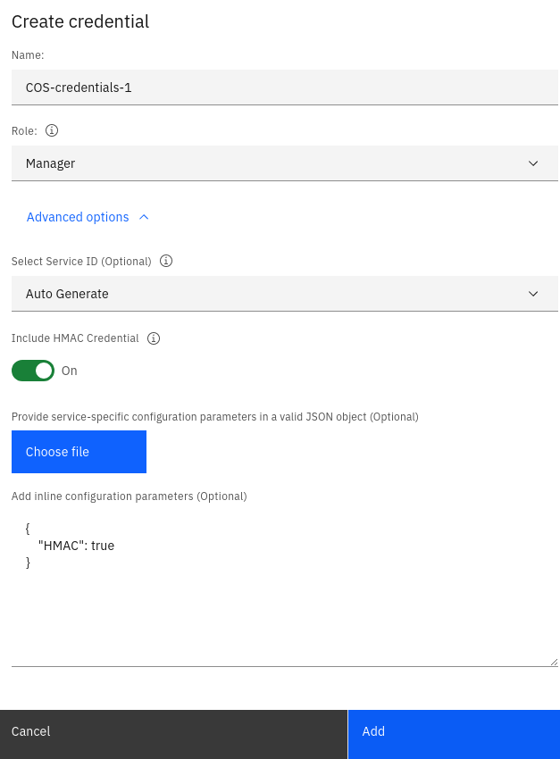
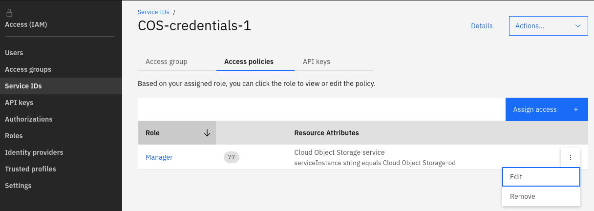
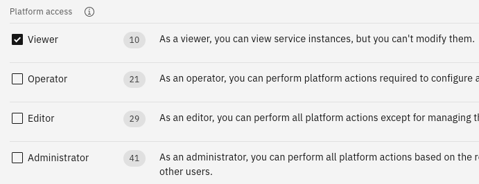

IBM Cloud Object Storage Managers
IBM Cloud Object Storage is a highly available, durable, and secure platform for storing unstructured data. Unstructured data (sometimes called binary or “blob” data) refers to data that is not highly structured in the manner of a database. Object storage is the most efficient way to store PDFs, media files, database backups, disk images, or even large structured datasets.
The files that are uploaded into IBM Cloud Object Storage are called objects. They are organized into buckets that serve as containers for objects, and which can be configured independently from one another in terms of locations, resiliency, billing rates, security, and object lifecycle.
Adding IBM Cloud Object Storage:
The Cloud Object Storage provider in ManageIQ is region centric. When registering this provider a given region must be chosen such that only buckets and objects of that region will be available / visible to the provider user in ManageIQ. For a list of supported regions please refer to this page.
-
Create new Cloud Object Storage instance in IBM Cloud Console.
-
Create access credentials by navigating to Service Credentials -> New Credential in your new instance.  Make sure to choose the Manager role and to enable Include HMAC Credential option.
-
Next navigate to
Manage -> Access (IAM) -> Service IDs, find your newly created credential and edit it.  -
Select
Viewercheckbox underPlatform Accessgroup and pressAdd.  -
Browse to ManageIQ menu Storage > Managers.
-
Click Configuration, then click
 (Add a New Storage Provider).
(Add a New Storage Provider). -
From the Type list, select IBM Cloud Object Storage.
-
Enter a Name for the storage manager.
-
Set default as a value for the Zone
-
Enter the desired region in the corresponding Region field. As explained above your provider will be region-specific.
-
Specify the Resource Instance Id, which you can find as the value of the
resource_instance_iditem of the credentials. -
Endpoint depends on the region you have chosen to connect your provider to. For more explanation and the listing of the endpoints please refer to this page. If your region is e.g.
us-souththen the public endpoint for it would behttps://s3.us-south.cloud-object-storage.appdomain.cloud. -
Specify the Apikey, which you can find as the value of the
apikeyitem of the credentials. -
Specify the Access Key, which you can find as the value of the
cos_hmac_keys -> access_key_iditem of the credentials. -
Specify the Secret Key, which you can find as the value of the
cos_hmac_keys -> secret_access_keyitem of the credentials. -
Once you have inputted the above values press on Validate button and wait for the validation to complete. Upon successful validation the Add button will be enabled, clicking on which will add the new provider.